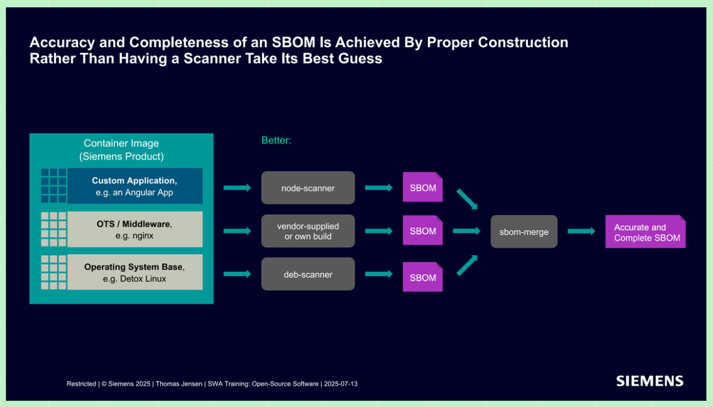

🟢 Open Source Software (OSS) at Siemens
#1. Brief Summary of the Topic
OSS makes it possible to adopt existing software and focus in-house development on product differentiation. According to LOPO, it is economically advantageous not to redevelop non-differentiating parts if a suitable solution exists. However, reuse brings licensing obligations and responsibility for integration, quality, and maintenance.
From an architectural perspective, this is about selecting and managing dependencies throughout the entire life cycle; from a testing perspective, it is about verifying them in a specific product. License clearing is not confirmation of technical quality.
#2. Definitions and Basic Concepts
General definitions; the meaning of the clearing report is also based on LOPO.
| Concept | Definition | What Matters in the Examination |
|---|---|---|
| OSS | Software under an open license that permits use, study, modification, and redistribution under specified conditions | Publicly available code is not automatically OSS; OSS can be commercial |
| Non-differentiating software | Functionality that does not provide the decisive differentiation of a product | A candidate for reuse, but it may be safety- or security-critical |
| License and compliance | A license establishes rights and conditions; compliance means actually adhering to them | A free download does not mean use without obligations |
| Copyleft | A mechanism for preserving licensing conditions and freedoms within the scope determined by the license | It does not automatically mean opening the entire product |
| Clearing / Clearing Report | Assessment of a component and its use / instructions for fulfilling licensing conditions | The report's instructions must be implemented; it does not replace technical tests |
| SBOM | A structured inventory of software components, versions, and related information within a defined scope | A record of composition, not a security certificate |
| Transitive dependency | A dependency acquired through another component | It belongs in the assessment of risks, licenses, and regression scope |
#3. Business Significance and Architectural Decision-Making
The Siemens strategy in Conceptboard emphasizes shorter time to market, lower development costs, cultural change, and the value of sharing. Available source code can reduce vendor lock-in and enable in-house fixes; however, quality and an active community are not automatically guaranteed.
Architectural synthesis: OSS, a ready-made commercial solution (COTS), and in-house development are compared in terms of:
- Value and costs: product differentiation versus the costs of integration, clearing, testing, and support.
- Technical suitability: functionality, interfaces, performance, platform, and testability.
- License and life cycle: manner of use, availability of fixes, and the ability to update and replace the component.
The decision should have reasons, an owner, and conditions for reassessment, for example in an ADR. Trade-off: reuse saves development effort but introduces a dependency on an external life cycle; an in-house fork enables changes but makes incorporating fixes more expensive.
#4. Licenses, Copyleft, and Manner of Use
General supplementary information, not a legal assessment of a specific product.
| Group | Essence |
|---|---|
| Permissive, for example MIT, BSD, Apache-2.0 | Broad use, including in proprietary products, provided that specific conditions are met, such as retaining notices |
| Weak copyleft, for example LGPL, MPL | Obligations apply to a defined part; the scope and conditions differ between licenses |
| Strong copyleft, for example GPL | When a covered work is distributed, it may require corresponding source code and preservation of the licensing conditions |
| Network copyleft, for example AGPL | Also addresses providing corresponding source code to users interacting with a modified version over a network |
The assessment covers the exact version, licenses of the parts and dependencies, modifications, integration, and distribution. The architect provides the technical context for the legal assessment. Neither a wrapper nor dynamic linking is a universal solution to copyleft.
Requirements may include license texts, copyright notices, or corresponding source code. Fulfillment is checked upon delivery; a functional test does not demonstrate the right to distribute the software.
#5. Clearing and the Architect's Responsibility at Siemens
Conceptboard distinguishes three phases; the final column summarizes their practical implications:
| Phase | Purpose | Responsibility of the Team and Architect |
|---|---|---|
| Pre-clearance | OSS selection | Assess suitability, version, use, and risks |
| Clearance | License assessment through SCPone or SW360 | Provide the correct supporting information and implement the measures specified in the clearing report |
| Post-clearance | Vulnerability monitoring | Monitor the versions in use and ensure a response to findings |
For a known component, its use is registered; for a new one, clearing is initiated. Practical synthesis: an existing result is checked for the specific version and use. Clearing is addressed during selection, not only just before release. Registration, assessment, and fulfillment of obligations are different steps.
Distribution model according to the materials: On-premises requires clearing for both the frontend and backend; a SaaS frontend is also recorded for clearing. For a SaaS backend, the source describes a Vulnerability Monitoring Only mode if it runs on Siemens servers, including IaaS, only in the latest version, and without distribution to third parties, taking the list of licenses for SaaS into account. This is not a general exemption from licensing obligations, particularly network copyleft.
Process note: The materials differ on the compilation requirement: the SCP overview labels it mandatory, SW360 recommended, while the on-premises slide requires it in general. The currently applicable procedure must be verified with an OSS expert / BU-Rep; training slides are no substitute for it.
#6. SBOM and Clearing Automation
An SBOM supports license compliance, vulnerability monitoring, and other checks. The presentation recommends creating it during the build from information about the application, middleware, and operating system, and merging the partial inventories. Scanning a finished container may not identify the origin of all binary parts.

Standard BOM is a specific description and supporting toolset using a subset of CycloneDX. According to the materials, CC Automation connects an analyzer in CI, a Standard BOM in JSON, and a client that creates or updates the BOM in SCPone.
General supplementary information: Correct identities, versions, transitive dependencies, and consistency with the delivered artifact must be verified. A successful upload is not approval, and more entries do not mean a more accurate SBOM.
#7. Security, Testability, and Life Cycle
The materials mention OpenSSF Scorecard for evaluating a project's security practices and Software Vulnerability Monitoring (SVM) for tracking vulnerabilities and fixes for registered components.
Architectural and testing synthesis: Neither a score nor the absence of known vulnerabilities demonstrates product security. The team must assess the impact of a finding, ensure remediation, and verify it. A dependency needs an owner and a feasible update path throughout the support period.
- Unit tests verify in-house logic and adaptation; a mock does not demonstrate the correctness of the actual library.
- Integration tests verify the actual interface, configuration, and interaction of components.
- NFR and security tests verify specific risks, such as timing, memory limits, or invalid inputs.
- Regression testing after an update verifies that the required behavior is preserved.
Testability means controllability and observability, not merely the availability of source code. Neither upstream tests nor clearing replace the evidence required for the target system, which may be safety-related.
#8. Common Mistakes and Anti-patterns
Didactic synthesis.
| Mistake | Problem and Typical Manifestation | Prevention |
|---|---|---|
| “Free = no obligations” | Notices or required source code are missing | Comply with the specific license and report |
| Clearing only just before release | An unsuitable license blocks a completed integration | Assess the component during selection and when changes occur |
| “Use secure OSS” without criteria | Neither acceptance nor testing can be decided | Establish risks and measurable quality requirements |
| Upstream tests or a mock are enough | They do not cover the actual configuration; integration fails | Test the actual component and its NFR |
| SBOM upload = approval | The pipeline ignores incomplete data and outstanding obligations | Separate the inventory, clearing status, and release criteria |
| A dependency without an owner | Nobody addresses new vulnerabilities and updates | Assign responsibility and a maintenance plan |
| Architects, lawyers, and testers working separately | The assessment does not match the actual integration | Share versions, use, the report, and changes |
#9. Examination Questions
Didactic synthesis; each question is followed by the core of a good answer.
#Basic Questions
- What is OSS? The rights and conditions of the license, not merely the price and available source code.
- Why use non-differentiating OSS? Speed of delivery, savings in development, and focus on product value.
#Intermediate Questions
- When is clearing addressed, and what does the report provide? Early, during selection and changes; instructions for the specific version and use that must be implemented.
- What is the difference between an SBOM and a clearing report? A record of composition versus instructions for license compliance; neither replaces tests.
#Advanced Questions
- Why is scanning a finished container not enough? Limited identification of binary parts; use partial SBOMs from builds and verify the artifact.
- Does SaaS have an exemption from licensing obligations? Not in general; distinguish the frontend, backend conditions, and any network copyleft.
#Questions About Practical Experience
- How was a component selected in a project? Actual alternatives, criteria, licenses, and substantiated reasons, not invented experience.
- What followed the discovery of a vulnerability? Impact, owner, remediation, tests, and deployment.
#Questions About Decisions and Trade-offs
- When should in-house development be chosen instead of OSS? Differentiation or unacceptable constraints; compare the lifetime costs of both options.
- When should you update, and when should you temporarily mitigate the risk? The urgency of the vulnerability versus regression and deployment options; the decision must have an owner and a deadline.
In the examination: The value of reuse, clearing, and maintenance must be covered; SBOM and automation are useful additions. Architectural thinking connects the business goal with integration and distribution; testing thinking defines the limits of the evidence provided by tests. Avoid absolute statements. Formulate a trade-off in terms of benefit, costs, risk, and the conditions for the decision.
#10. Model Examination Answer
Didactic synthesis for approximately 4–6 minutes of speaking. The short illustration is general, not a description of an actual internal project.
Open Source Software is software provided under an open license that permits its use, study, modification, and redistribution under specified conditions. It is not a synonym for software without a price, obligations, or a rights holder. The topic of OSS at Siemens connects the business benefit of reuse with license clearing, component management, and responsibility for the entire product life cycle.
From a business perspective, the main idea is not to redevelop non-differentiating software. If standard infrastructure does not provide product differentiation, it may be more advantageous to adopt an existing solution and devote in-house capacity to domain value. The materials mention shorter time to market, lower development costs, cultural change, and creating value through sharing. However, reuse is not without costs: integration, testing, clearing, support, and updates must be included. Moreover, a non-differentiating part may be critical to safety, security, or availability.
For an architect, selecting OSS is therefore a decision about the composition and sustainability of the system. Functionality, qualities, licenses, dependencies, interfaces, and the ability to repair or replace the component later are assessed. The availability of source code can reduce dependence on a vendor, but it does not eliminate, for example, dependence on a specific API or knowledge. Similarly, the ability to make in-house modifications brings responsibility for maintaining any resulting fork.
Regarding licensing, it is important to distinguish permissive licenses from the various forms of copyleft. Even permissive licenses are not without conditions. For copyleft, one cannot claim that it always opens the entire product, or that dynamic linking always resolves it. The specific license and version, modifications made, and manner of integration and distribution must be known. The legal assessment should receive an accurate technical context from the architect and team.
Conceptboard distinguishes pre-clearance, meaning OSS selection; clearance, meaning legal clearing through the relevant process; and post-clearance, meaning vulnerability monitoring. For a known component, registration of its use and applicability of the existing result are addressed; for a new one, clearing is initiated. The clearing report provides instructions on how to use the component in compliance with its license. However, the mere existence of a report does not mean that the product team has already delivered the required licensing information or corresponding source code.
The distribution model also matters. The materials require clearing for on-premises components and the SaaS frontend. For a certain SaaS backend mode, they describe vulnerability monitoring only, but with conditions and a list of licenses. A general exemption for SaaS cannot be inferred from this. Moreover, the slides formulate the compilation requirement differently in the individual processes, so the specific binding procedure must be verified with the responsible role.
An important input is the SBOM, a structured inventory of the product's software composition. It serves both licensing and security processes, but is not itself approval or confirmation of security. The presentation recommends creating it from information about the individual layers during the build and then combining them. Scanning a finished container may not identify all original components. CC Automation then uses the Standard BOM from CI to automatically create or update records in SCPone; it automates repetitive tasks, not responsibility for the result.
For testing, it is essential to recognize that neither OSS origin nor clearing demonstrates suitability for a specific product. For example, for a message-processing library in an industrial gateway, the actual integration, invalid inputs, memory limits, and timing behavior must be verified alongside the licensing conditions. A unit test with a mock of the library confirms the response of the in-house adaptation, not the correctness of the actual library. After an update to the library, appropriate regression testing is therefore performed, and the changed dependencies and licensing context are reassessed.
Vulnerability monitoring continues after release. OpenSSF Scorecard can help assess the project's practices, and SVM can provide information about registered components, but the team must evaluate the impact and carry out remediation. The update trade-off lies, for example, between the urgency of a security fix and the risk of regression; it is addressed according to the specific impact, through tests and a deployment plan, not by ignoring notifications.
In summary, OSS should be actively used wherever it brings business value. A professional approach connects component selection, license clearing, accurate records, technical verification, and long-term maintenance. The architect's role is to connect these perspectives and establish the conditions for reuse to remain beneficial throughout the product's support period.
#11. Short Version for Quick Revision
5 Main Points
- Reusing non-differentiating software frees capacity for product differentiation.
- A license means both rights and conditions for a specific use.
- Select, perform clearing, monitor, and maintain.
- An SBOM describes composition; it is not approval or a security certificate.
- The product team must verify integration, NFR, and updates.
5 Concepts: OSS, non-differentiating software, copyleft, Clearing Report, SBOM.
5 Questions: Why reuse? When to perform clearing? What does the license require? What does an SBOM demonstrate? What continues after release?
3 Mistakes: “Free = no obligations”; clearing as evidence of quality; a dependency without maintenance.
Examination Sentence: “OSS saves development effort on non-differentiating parts, but requires license compliance, integration verification, and responsible maintenance.”
#12. Learning Outcome
According to LOPO: OSS @ Siemens and Test and Quality, it should be possible to:
- Understand: explain the business benefit of reuse, the clearing report, and OSS risks.
- Analyze & Assess: recognize non-differentiating parts, the need for clearing, and risks requiring tests.
- Contribute & Drive: support suitable OSS/COTS, overcome organizational obstacles, and ensure integration and NFR verification.
Synthesis: The connection to testing also includes controllability, observability, and risk-based prioritization. The practice outcome requires actual application in a project, not just an oral explanation.
#13. Practical Example: Dependency on newlib in ET200 Modules
Project experience provided by the user; the recommended verification below is supplementary expert guidance.
Situation and business impact: In the embedded development of ET200 IO modules, particularly interface modules, GNU GCC is used for some models. The problem was not the use of the compiler itself, but the dependency of the resulting firmware on newlib, a library of standard C functions. In the toolchain configuration in use, references to its functions were generated and its code was linked in even without the developer deliberately selecting the library.
According to the legal assessment of the project described, every product containing this code also had to be supplied, in its condition for sale, with the relevant license text, readable using standard office equipment. The solution was a printed license or a license on CD; according to the lawyers, neither a QR code nor an internet link was sufficient. This complicated and increased the cost of delivering every affected product. It was a risk supported by experience, not merely a hypothetical concern.
This conclusion applies to the specific use and legal assessment. It does not establish a universal obligation to supply a CD whenever newlib is used, nor does it support a claim that GCC always links in newlib.
Architectural decision: For modular, unified components, such dependencies are deliberately excluded so that they are not passed on to every product that adopts the component:
- GCC remains a development tool, but the in-house portable code is designed without a dependency on newlib or other unapproved libraries.
- The production build uses a verified compiler. Third-party libraries are subject to strict control.
- For simple data containers and similar functionality, an in-house implementation is preferred if its scope and maintenance are manageable.
Trade-off: An in-house implementation takes on development, testing, and maintenance costs, but may eliminate recurring licensing and logistics costs across a product line. This is not a general rejection of OSS: the deciding factor is the total cost of reuse, including distribution, not merely the programming effort saved.
How to verify the decision (supplementary expert guidance): Neither the absence of explicit library calls in the source code nor a change of compiler alone is sufficient. The compiler may generate calls to helper functions, and the linker may add runtime libraries. For the final production build, it is therefore advisable to check the linker map, linked objects and libraries, and consistency with the SBOM. Functional verification includes boundary conditions of the in-house containers, memory and timing limits, and behavior on the target platform with production compilation. Tests using the development GCC alone do not verify this configuration.
Short Examination Answer:
“While developing ET200 modules, we addressed an indirect firmware dependency on newlib when using GCC. It was not about the compiler's own license, but about library code delivered in the product. According to the legal assessment, neither a link nor a QR code was sufficient: the license had to be supplied, for example, in printed form or on CD, which increased the cost of sales. We therefore restrict these dependencies in unified components and prefer an in-house implementation for simple containers. We use GCC during development and compile production code with a verified compiler. The trade-off is our own testing and maintenance; the absence of unwanted libraries must be demonstrated in the resulting build. The example shows that even non-differentiating functionality can be cheaper to develop if reuse brings disproportionate distribution costs.”
#14. Summary Table
| Area | What Matters | Relationship to Architecture | Relationship to Testing | Typical Examination Question |
|---|---|---|---|---|
| Reuse | Value and total costs | Selection of OSS/COTS/an in-house solution | Cost and scope of verification | Why not develop everything? |
| Licenses and clearing | Version, use, fulfillment of obligations | Integration and distribution | Delivery checks, not evidence of quality | What does the report require? |
| SBOM and automation | A record of the actual composition | Dependency management | Traceability and regression scope | What does an SBOM not demonstrate? |
| Testability | Controllability and observability | Interfaces and adapters | Actual integration, NFR | Why is a mock not enough? |
| Life cycle | Owner, monitoring, and fixes | Updatability | Verification of remediation and regression testing | What follows a finding? |